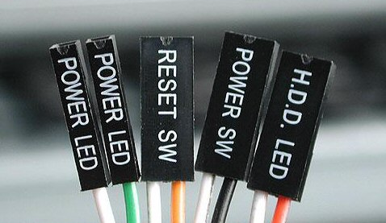
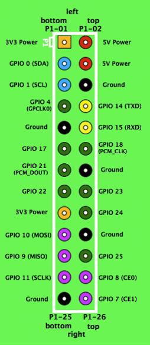
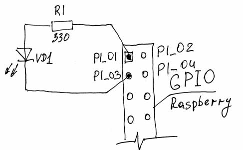
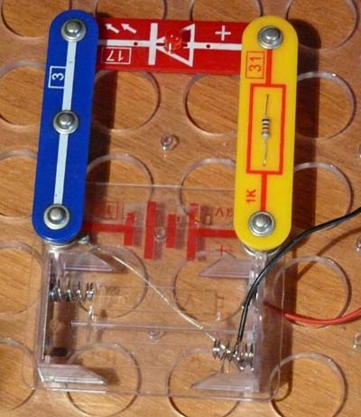
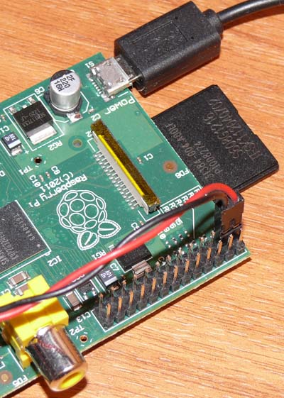

Если вы приобрели Raspberry Pi просто ради любопытства, не отдавая себе отчёта в том, для чего он конкретно вам нужен, то наверняка с каждым днём вам становится всё труднее найти для него применение. Вы уже с ним вдоволь наигрались. Попробовали установку разных операционных систем, послушали музыку, посмотрели видео, попробовали поиграть и порисовать… И наверняка с огорчением для себя сделали вывод - «Всё ж таки Raspberry Pi мало годится для использования в качестве настольного компьютера». Слишком он уж медленный и задумчивый, по сравнению с обычным компьютером. И вроде бы ничего серьезного с ним сделать нельзя. Остаётся лишь найти ему применение в качестве либо медиацентра, либо простенького интернет-сервера, который не страшно оставлять включённым круглые сутки…
Но всё ж таки Raspberry Pi может делать одну вещь гораздо более эффективнее, чем любой домашний компьютер- он может управлять внешними устройствами. Устройства могут быть абсолютно любыми, от обычной лампочки, до беспилотного летательного аппарата. В данном случае, область применения Raspberry ограничена лишь вашей фантазией и знаниями. И если вы никогда и ничего подобного не делали, но это вас заинтересовало, то эта статья для вас. Итак, начнём.
Чтобы общаться с любыми внешними устройствами и управлять ими, Raspberry Pi имеет на борту интерфейс, называемый GPIO. Это аббревиатура от General Purpose Input-Output. А по-русски, это низкоуровневый интерфейс ввода-вывода прямого управления. На плате Raspberry он находится в углу, в виде гребёнки из 26 штырьков, рядом с видеовыходом. Т.е. через этот интерфейс Raspberry может слушать и отдавать команды любому внешнему устройству, например беспилотнику. Но сегодня мы беспилотник строить не будем, начнём с обычной лампочки, а точнее светодиода, который и исполнит роль подопытной лампочки. Наша задача- заставить светодиод, подключённый к Raspberry включаться и выключаться по его команде. Кроме того, дабы убедиться, что эти включения происходят вполне осознано и так, как мы этого хотим, а не благодаря каким-то глюкам в недрах процессора, мы привнесём в нашу программу элемент общения с нами. Т.е. отстроим чёткую иерархию- Raspberry управляет светодиодом, а самим Raspberry управляем мы. Теперь надо подготовиться и раздобыть где-то несколько вещей.
Во-первых, нужно найти светодиод:
Его можно достать из старой сломанной игрушки, из зажигалки с фонариком, попросить у знакомого радиоэлектронщика, в конце концов, просто купить.
Во-вторых, понадобятся проводочки любые и парочка коннекторов BLS:

Такие коннекторы можно вытащить из старого системного блока вместе с проводами, или попросить у знакомого компьютерщика, или тоже купить. Они прекрасно подходят для подключения к разъёму на Raspberry.
Начнём с планирования используемых портов. Порт- это грубо говоря штырёк на разъёме. Так, как штырьков там много (26), то и портов тоже много. А чтобы в них не запутаться, то каждому порту присвоен свой номер и обозначение. Следует заметить, что не все штырьки в этом разъёме являются портами. Некоторые штырьки подключены к источникам напряжения, а некоторые вообще никуда не подключены (По секрету, на самом деле они всё-же подключены, но ими пользоваться нельзя, можно убить свою Малинку. Поэтому лучше вобще их не трогайте).
Вот собственно как эти порты расположены на плате:

Чтобы светодиод зажёгся, нам нужно его подключить к источнику питания. Выбираем для питания светодиода Р1-01, верхний по рисунку штырёк, на котором присутствует напряжение 3,3в. Для управления светодиодом нам понадобится один порт GPIO. Можно выбрать любой. Но если у вас есть разъём BLS, то удобнее в данном случае использовать порт, который выведен на штырёк P1-03 и называется GPIO 0. В таком случае мы, воспользовавшись одним разъёмом, сможем подключить наш светодиод. Итак, мы будем подключать светодиод между ножками разъёма P1-01 и Р1-03. С вывода Р1-01 мы берём +3,3в для питания светодиода, а вывод Р1-03 будет тем самым управляющим выводом порта GPIO. Все эти порты физически находятся внутри центрального процессора Raspberry Pi, который называется BCM2835. Этот процессор может подключать любой порт к источнику напряжения 3,3в, а может подключить порт к 0 питания (а может вообще никуда не подключать, но об этом позже). Эти переключения он делает в соответствии с поданной командой. Значит, когда порт будет подключён к напряжению +3,3в, наш светодиод гореть не будет, т.к. току некуда идти. А когда процессор подключит порт к 0, то наш светодиод загорится, т.к. ток побежит от +3,3в к 0 через светодиод. Значит наша программа должна будет отдавать соответствующие команды процессору в соответствии с нашим желанием.
Маленькое, но важное отступление. На самом деле, мы не должны подключать светодиод напрямую между источником питания +3,3в и выводом порта. Это нельзя делать по двум причинам. Причина первая: любой светодиод нормально работает при определённом токе. Если через светодиод потечёт большой ток (а выход +3,3в способен отдать до 50мА), то светодиод сгорит. Если маленький ток, то светодиод будет гореть слишком слабо, либо вообще не будет светиться. Для большинства обычных светодиодов рабочий ток находится в пределах 10-20мА. Отсюда вытекает и вторая причина (хотя в данном случае она несущественна). Если мы пропустим большой ток через порт GPIO, то этим самым мы уничтожим процессор и Raspberry- умрёт. Поэтому, мы должны следить, чтобы через порт не протекал ток больше допустимого. Примем для себя ограничение в 16мА, так мы точно не сожжем процессор. Как этого добиться? Очень просто! Нам нужно последовательно со светодиодом включить токоограничивающий резистор. И сейчас мы его рассчитаем.
Примем для светодиода рабочий ток в 10мА. Убеждаемся в том, что выбранный нами ток не превышает предельно допустимый ток для порта в 16мА. Теперь зная напряжение питания 3,3в и рабочий ток 10мА, мы можем по закону Ома рассчитать необходимое нам сопротивление. R=U/I=3,3/0,01=330Ом. Значит нам нужно найти резистор с сопротивлением 330Ом. А точнее- сопротивлением не менее 330Ом. Больше- можно. Светодиод будет заметно светиться и при сопротивлении 1000 Ом, или 1кОм. В общем наша задача- найти резистор с сопротивлением от 330 Ом до 1кОм. Если вы его нашли, то можно собрать вот такую схему:

Схему лучше собрать на макетной плате. Лично мне, для экспериментов, мой сын дал на прокат свой конструктор «Знаток».
Так выглядит схема в сборе:

Так мы подключаемся к Raspberry:

Так же стоит обратить внимание на то, что светодиод должен подключаться Анодом к + источника питания, т.е. в нашем случае это Р1-01. Как найти на светодиоде Анод? Очень просто! Достаньте из любого ДУ батарейку на 1,5В и подключите к ней ваш светодиод. Если он не зажёгся, поменяйте выводы местами. Если зажёгся- то на + батарейки и будет Анод светодиода:
Если вы собрали схему, то отложите пока её в сторонку. Теперь мы займёмся второй частью задачи - написанием программы управления светодиодом. Писать эту программу мы будем на языке Си. Почему на именно на Си? Просто по тому, что я других языков не знаю, а раз вы читаете эту статью, то скорее всего вы тоже немного знаете о программировании и радиоэлектронике, а значит, вам всё равно с какого языка начинать.
Обычно изучение языков программирования начинают с написания программы «Hello World!», но мы же круче «тех» чайников, поэтому мы начнём сразу с низкоуровневой работы с периферией. Тем более, что это не намного сложнее ХеллоуВорлда. ;) Что для этого нужно? Нужен любой текстовый редактор, в котором мы будем набирать программу. В Raspbian есть отлично подходящий для этого редактор “nano”. Ещё нужен компилятор, это программа, которая осуществляет перевод написанной нами программы с человечески понятного языка на язык, понятный компьютеру. Т.е. делает из нашей программы исполняемый файл, который мы впоследствии и запустим на Raspberry. Эта штука тоже у нас есть, называется gcc. Этот компилятор поставляется в комплекте со всеми Линуксами и уже готов к работе.
Как видите, всё необходимое у нас уже есть. Хотя нет. Одной вещи все-таки у нас не хватает. Её мы возьмем из интернета. Речь идёт о библиотеке функций управления портами GPIO на Raspberry, специально написанной добрым человеком для того, чтобы наша программа по своей простоте могла бы соперничать с «Хеллоуворлдом» и нам самим бы не пришлось ломать голову, изучая техническую документацию на процессор и протоколы работы с его внутренностями. Сама библиотека состоит из заголовочного файла, в котором обозначены все имена функций со структурами переменных и файла библиотеки самих функций. Эту библиотеку нужно скачать и установить, чтобы компилятор мог с ней работать. Библиотека называется bcm2835-1.17. Последние цифры в названии библиотеки, обозначают её версию. А так, как библиотека постоянно обновляется автором, то версии будут меняться. на сегодняшний день доступна версия 1.17. Узнать о номере последней версии можно по адресу:
http://www.open.com.au/mikem/bcm2835/index.html
По этой же ссылке вы можете ознакомиться со всеми функциями, которые присутствуют в этой библиотеке. Мы же пока установим версию 1.17. Запускаем окно терминала и вводим туда команду:
wget http://www.open.com.au/mikem/bcm2835/bcm2835-1.17.tar.gz
Библиотека быстренько скачивается. Чтобы её установить, нужно сначала её разархивировать. Это делается следующей командой:
tar zxvf bcm2835-1.17.tar.gz
Теперь перейдём в директорию, куда эта библиотека развернулась:
cd bcm2835-1.17
Ну и инсталлируем её:
./configure make
sudo make check
sudo make install
Всё, теперь эта библиотека у нас есть в наличии, она установлена, и мы, и компилятор можем ей пользоваться в своих интересах. Начинаем писать программу. Возвращаемся в домашнюю директорию. Тут можно создать папочку для наших экспериментов с любым именем, например myprog. Перейдём в эту папку и начинаем писать нашу программу:
//GPIO-test.c
// Программа включает на 1 секунду светодиод,
// подключённый к порту Р1_03
// Компиляция командой gcc -o GPIO-test GPIO-test.c -lrt -lbcm2835
#include <bcm2835.h>
#define PIN RPI_GPIO_P1_03 // Для RPi ревизии v1
//#define PIN RPI_V2_GPIO_P1_03 // Для RPi ревизии v2
int main()
{
if (!bcm2835_init()) // Инициализация GPIO
return 1; //Завершение программы, если инициализация не удалась
bcm2835_gpio_fsel(PIN, BCM2835_GPIO_FSEL_OUTP); //Устанавливаем порт Р1_03 на вывод
bcm2835_gpio_write(PIN, LOW); // Устанавливаем порт в 0, светодиод горит
bcm2835_delay(1000); // Ждём 1000 милисекунд
bcm2835_gpio_write(PIN, HIGH); // Устанавливаем порт в 1, светодиод не горит
return 0; // Выход из программы
}
Обратите внимание на строки #define. Их в программе 2 и одна из них закомментирована. Одна строка для ревизии RPi v1, вторая для RPi v2.
Если у вас v1, то всё оставьте как есть. Если у вас RPi v2, то первую строку с #define удалите, а со второй уберите символ комментария //.
В будущем, во всех остальных программах, просто добавляйте _V2_ между RPI и GPIO в определении портов, если ваша плата RPi v2.
Сохраняем нашу программу и выходим из текстового редактора. Теперь, если вы введёте команду ls, то увидите только что созданный файл GPIO-test.c. Чтобы этот файл превратился в работающую программу, его нужно скомпилировать. Пишем:
gcc -o GPIO-test GPIO-test.c -lrt -lbcm2835
в этой строке:
Если компилятор не выдал никаких сообщений, то значит, всё у нас получилось. Если сейчас дать команду ls, то мы увидим, что в директории появился ещё один файл GPIO-test, причём он отмечен зелёным цветом. Это говорит о том, что файл является исполняемой программой. Осталось нам его запустить, но перед этим ещё раз проверяем нашу схему со светодиодом, чтобы всё было собрано правильно и подключено к контактам Р1_01 и Р1_03 разъёма GPIO. Если ошибок не обнаружено, запускаем программу: sudo ./GPIO-test После этого светодиод должен загореться ровно на 1 секунду и погаснуть. Если всё так и произошло, то я вас поздравляю! Вы только что при помощи Raspberry Pi передали через порт GPIO команды светодиоду: включиться, гореть 1 секунду и выключиться.
Теперь о том, что делает каждая строка в нашей программе.
Все надписи после двойного слеша // являются коментариями и никак не влияют на выполнение программы.
#include <bcm2835.h> -эта строка говорит компилятору, что в программе используется заголовочный файл bcm2835.h. В этом файле находятся все описания функций и идентификаторы портов GPIO.
#define PIN RPI_GPIO_P1_03 - здесь мы говорим компилятору, что везде в программе, где он увидит идентификатор PIN, ему нужно выполнить замену его на идентификатор RPI_GPIO_P1_03 . Это сделано для того, чтобы мы могли при желании быстро изменить номер подключаемого порта. Для этого достаточно изменить только эту строку, а не выискивать по всей программе, где мы этот идентификатор использовали.
int main() это начало нашей программы, обозначение главной функции в Си.
if (!bcm2835_init()) // эта часть пытается инициализировать GPIO и если это не получилось,
return 1; // то аварийно завершает программу и передаёт на выходе код 1.
bcm2835_gpio_fsel(PIN, BCM2835_GPIO_FSEL_OUTP); - Эта функция устанавливает для нашего порта Р1_03 режим на вывод. Т.е. говорит процессору, что этот порт будет использован для управления внешним устройством.
bcm2835_gpio_write(PIN, LOW); - устанавливаем порт Р1_03 в низкое состояние, т.е. процессор его подключает к 0. После этого светодиод загорается.
bcm2835_delay(1000); - Эта функция просто ждёт 1000 милисекунд, или ровно 1 секунду. Всё это время у нас горит светодиод.
bcm2835_gpio_write(PIN, HIGH); - устанавливаем порт Р1_03 в высокое состояние, т.е. процессор его подключает к +3,3в. При этом светодиод гаснет.
return 0; - Выход из программы с кодом 0.
Т.е. алгоритм работы с портом GPIO в режиме записи, т.е. вывода, выглядит следующим образом:
На этом на сегодня закончим. В следующей части научим наш светодиод загораться более полезным образом, а так же научимся портами GPIO не только отдавать команды другим устройством, но и слушать их.
А пока можете начинать изучать язык Си. А так же попробуйте изменить эту программу так, чтобы светдиод управлялся бы другим портом и испытайте её.